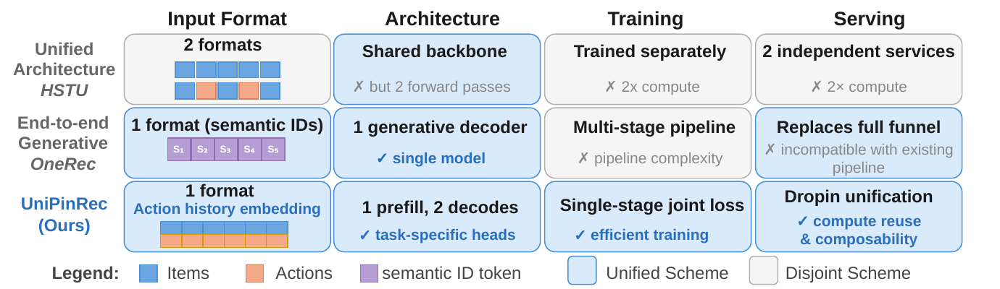
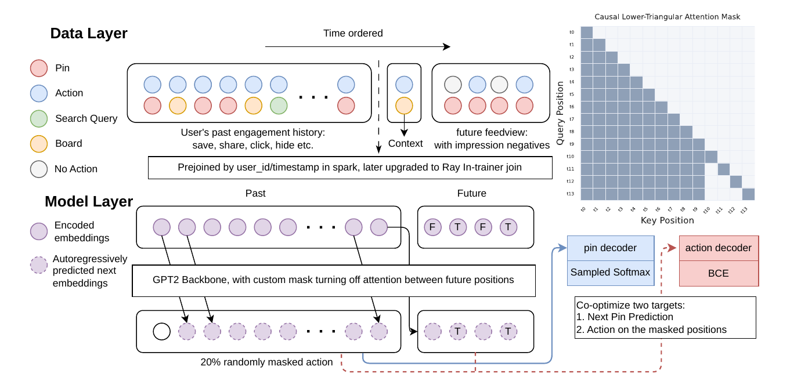

Pinterest 的推荐链路和多数公司一样分成召回和排序：召回模型 PinRec 用 ANN 从全量 Pin 里取出不到 3000 个候选，排序模型再给这些候选打分。两边现在都是 Transformer，输入也都是同一段用户行为历史，但它们分开训练、分开部署，线上每个请求要把这段历史编码两遍。UniPinRec 把两者合成一个模型：用户历史只编码一次，召回拿输出向量去查 ANN，排序直接复用编码时留下的 KV cache 给候选打分。离线上，它的召回 Recall@10 和线上召回模型持平，按“保存”预测排序的 Hit@3 比线上排序模型高 14.7%。在 Board More Ideas（按用户的某个看板推荐 Pin）和通知两个场景替换原召回后，前者场景内保存数提升 0.95%，后者 push 打开提升 0.91%。
1. 召回和排序为什么要合，又为什么一直没合
召回和排序各自训练时，两边都要从同一段行为历史里学用户表示，参数不共享，训练算力花两份，线上 GPU 也花两份。主干都换成 Transformer 以后，编码历史成了两边最贵的那部分计算，重复就更明显。
合起来有三处麻烦。第一是用法不同：召回要在毫秒级从百万量级候选里挑，只能用 ANN 点积；排序只看几百个候选，可以给每个候选做更重的交叉计算。第二是目标不同：召回用全库上的 sampled softmax，排序用曝光集合上的二分类交叉熵。第三是线上约束：合并后的模型必须比分开部署更便宜，还要能和关键词、热门等其他召回源一起用，每个阶段还要能单独做 A/B 和回滚。
已有工作只合了一部分。HSTU 用同一种 Transformer，但召回的输入是纯物品序列，排序的输入要在每个物品后面插一个动作 token，两种格式不同，只能分开训练，计算也无法共享。OneRec 这类端到端方法直接自回归生成语义 ID，整条漏斗被替换掉，很难再接入现有的其他召回源，也失去了按阶段回滚的能力。

2. 方法

2.1 起点：PinRec
PinRec 是 Pinterest 线上的生成式召回模型。每个 Pin 用预训练的 OmniSage 向量和 CLIP 多模态向量表示，经 MLP 投影成 L2 归一化的向量；用户正向行为过的 Pin 按时间排成序列，送进因果 decoder-only Transformer，每个位置预测下一个 Pin，损失是带 logQ 频率修正的 sampled softmax，负样本来自 batch 内和随机采样。UniPinRec 在这个模型上加排序能力，要解决动作信息怎么进序列、候选怎么接进序列两件事。
2.2 动作拼在特征维上，再随机遮掉
HSTU 的做法是在每个物品后插一个动作 token，序列长度翻倍，格式也和召回对不上。UniPinRec 改成 Masked Action Modeling（MAM）：把每个位置的动作 multi-hot 向量（点击、保存、隐藏等）过一个线性层，和该位置的物品向量在特征维上拼接，再一起投影到隐藏维度。动作信息放在特征维而不是序列维，序列长度和召回模型完全一样，召回的 checkpoint 可以直接拿来初始化。
训练时，历史里每个位置的动作以概率 独立遮掉，换成一个专门的 [MASK] 类别；候选位置的动作永远遮掉，因为线上推理时候选还没有被用户看到。[MASK] 单独占一维，模型能区分“动作未知”和“用户没有动作”。被遮掉的位置要预测自己的动作，排序监督就来自这里。
举个示意例子：用户历史是 A（保存）、B（点击）、C（无动作）。训练时 B 的动作被遮掉，模型在 B 的位置只看到 B 的内容向量、A 的内容和“保存”，要输出 B 被点击、被保存、被隐藏的概率。
2.3 候选接在历史后面，彼此不可见
ANN 召回的 个候选接在 条历史后面，组成一条序列。历史部分照常做因果注意力；每个候选能看到全部历史，但看不到其他候选，这是 M-FALCON 的掩码方式。所有候选共用同一个位置编号、场景类型和时间戳，所以一个候选的分数和同批放了哪些候选无关。注意力开销从 降到 ，实现上用 flex attention 把这种块稀疏的掩码编译成融合 kernel。
总损失是召回损失加排序损失：
是历史各位置上的下一 Pin 预测损失，和 PinRec 相同； 是动作类型， 是动作类型总数； 是该动作的 MLP 预测头；、 是历史第 位、候选第 位的隐状态； 是该动作是否发生的 0/1 标签； 是历史中被遮掉的位置； 是每种动作的权重。前一项让历史位置预测被遮掉的动作，后一项让候选位置预测真实曝光后的动作。
2.4 训练样本：过去的行为加下一次请求的整屏曝光
召回模型通常只用正向行为序列训练，排序模型用曝光日志，里面有点了的也有没点的。联合训练两样都要，于是每条样本由一段过去的行为序列，加上之后某次请求的整屏曝光（论文叫 feedview）及其行为标签组成。序列每个位置是（Pin，场景，动作，时间戳）。没有任何互动的整屏曝光只保留 10%，以放大稀有的互动类别；评估集不降采样。
行为序列和曝光记录存成两张按用户 ID 分桶的 Iceberg 表，训练时由 Ray 的数据加载层在内存里按桶拼接。这样不用离线拼出一份重复的大表，序列长度、采样比例这些参数可以在训练时改。
2.5 线上：召回和排序两个进程共用一块显存

召回和排序跑在两个 Triton 节点、两个独立进程里，中间夹着 CPU 上的 Faiss 索引。Faiss 的 search_and_reconstruct 在返回候选 ID 时把索引里存的 Pin 向量一起返回，排序节点直接把这些向量当候选 token，省掉一次 embedding 计算，也保证召回和排序用的是同一份物品表示。
KV cache 的跨进程传递是关键。如果把 KV 张量序列化后从一个进程传给另一个，要走一趟 GPU→CPU→GPU，延迟会被这一趟吃掉。UniPinRec 让每个召回副本启动时预分配一块形状为 [层数, 槽位, KV 头, 历史长度, 头维度] 的显存池，用 CUDA IPC 句柄导出，排序进程把同一块物理显存映射进自己的地址空间，直接读召回写下的历史 KV。槽位按轮转复用。
3. 实验
3.1 一个模型能不能同时当召回和排序
这组实验要证明联合训练既不损失召回，又能做出不差于专用排序模型的排序。数据用 Board More Ideas 场景，召回看 Recall@10（未来那屏曝光里用户互动过的 Pin 有多少进了召回前 10），排序看 Hit@3（按保存头打分排序后，前 3 是否命中保存）。对比对象有：线上排序模型 TransAct V2 + DCNv2（长序列 Transformer 加特征交叉模块）；HSTU，按交错输入格式同时训练召回和排序，有效序列长度对齐；PinRec；PinRec 微调版，先训好召回，再冻结物品编码器加排序损失微调，冻结是为了和已建好的 Faiss 索引兼容；去掉召回损失、只训排序的 UniPinRec。两列指标在不同评估集上算。
| 方法 | Hit@3 | Recall@10 |
|---|---|---|
| TransActV2 + DCNv2 | 0.088008 | N/A |
| HSTU | 0.097326 | 0.76161 |
| PinRec | N/A | 0.77486 |
| PinRec finetuned | 0.095869 | N/A |
| UniPinRec w/o item loss | 0.097345 | N/A |
| UniPinRec | 0.10096 | 0.77659 |
召回上，UniPinRec 和 PinRec 基本持平（+0.2%），所以它可以直接替换线上召回。排序上，它比线上排序模型高 14.7%，也高于 HSTU。去掉召回损失后 Hit@3 降到 0.097345，召回的下一 Pin 预测给排序提供了额外监督，联合训练比只训排序更好。PinRec 微调版更差，原因是物品编码器被冻结，物品向量没法为排序调整。
3.2 复用 KV cache 能省多少
这组实验要说明共享历史编码带来的速度收益。测试在 NVIDIA L40S 上，batch 8，历史 992 个 token，候选 656 个，12 层，比较“排序时重新编码历史”（prefill）和“复用 KV、只算候选”（decode）两种路径。
| 路径 | 精度 | 注意力实现 | 运行方式 | 延迟 (ms) | 加速 |
|---|---|---|---|---|---|
| Prefill | bf16 | SDPA | compile | 25.72 | 1.00× |
| Decode | bf16 | SDPA | compile | 10.42 | 2.47× |
| Decode | bf16 | flex | compile（线上使用） | 8.57 | 3.00× |
| Decode | fp8 | flex | CUDA graph | 6.56 | 3.92× |
在线上同等 GPU 预算下，以召回和排序都用 bf16 + SDPA 为基线，bf16 + flex 的 decode 方案端到端延迟降 11.1%，QPS 升 63.6%。fp8 方案 QPS 升 109.1%，延迟反而升 6.7%：fp8 kernel 要求展平后的首维是 8 的倍数，召回的自回归步每次只有 1 个 token，只能等请求凑够批次。线上实验因此用 bf16。
3.3 掩码比例
取 0、0.1、0.2、0.3 时，Hit@3 分别是 0.09923、0.10078、0.10096、0.10075。不遮的版本最差，0.2 最好。作者另做了规模实验，层数从 2 到 24、序列长度从 256 到 2048，效果都持续变好；序列长度带来的注意力开销是平方增长，所以在延迟敏感的场景更先成为瓶颈。
3.4 线上 A/B
线上把原召回换成 UniPinRec 的“召回 + 轻排”服务：先用 ANN 多取候选（Board More Ideas 约 2 倍，通知约 3 倍），再用动作预测头排序，取前 K 个（K 小于 3000）交给下游。下游的 TransAct V2 精排模型保持不动，所以离线的排序提升会被下游稀释。对照组是 PinRec。
| 场景 | 指标 | 提升 |
|---|---|---|
| Board More Ideas | 场景内保存 | +0.95% |
| Board More Ideas | 全站保存 | +0.08% |
| 通知 | push 打开 | +0.91% |
| 通知 | 沉睡用户 push 打开 | +1.72% |
| 通知 | 通知场景内保存 | +3.84% |
| 通知 | 邮件点击 | +0.30% |
| 通知 | 周活跃用户 | +0.09% |
沉睡用户的 push 打开提升约为全体用户的两倍，作者的解释是更个性化的通知内容对召回流失用户更有效。
4. 局限
作者自己说明，UniPinRec 目前只合并了召回和上游的轻排，还没有替换 L2 精排，因为精排还依赖分数校准、训练日志、运维工具等一整套基础设施。fp8 方案吞吐更高，但因为批次形状限制增加了延迟，还没有上线。
另外，表 1 的两列在不同评估集上算，Hit@3 也只报告了“保存”这一个动作头，点击、隐藏等其他动作的排序质量论文没有给出。
5. 实践意义
- 如果你的召回和排序都已经是吃同一段行为序列的 Transformer，最直接的收益来自共享历史编码。排序时历史部分只读 KV cache、只算候选，单次排序前向的计算从 量级降到 $O(nk)$，这一步不要求先改训练方式。
- MAM 的做法可以单独拿来用：把动作拼在特征维而不是插成新 token，序列长度不变，就能给召回主干加上动作预测的监督。
- 上线顺序可以参考 Pinterest：先替换召回加轻排，下游精排不动，A/B 归因清楚，出了问题也能单独回滚这一段。